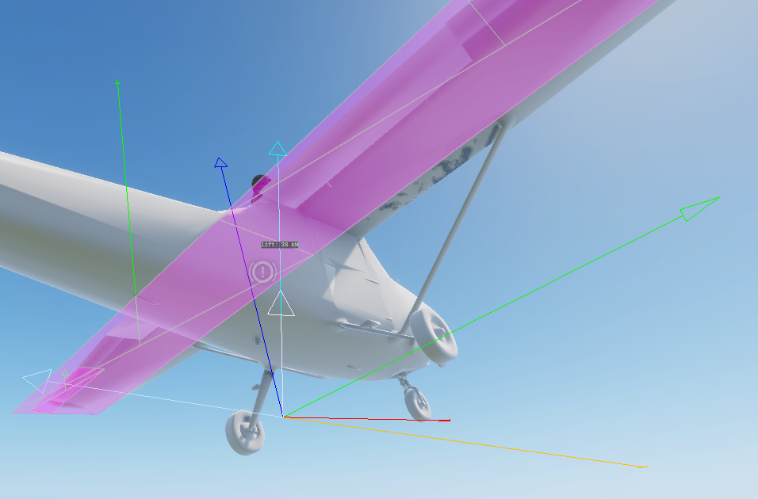

Flight Model¶
PFC_FlightModel is where the aircraft is simulated. This page explains how each part works; the
Reference page lists every tunable attribute with its default.
Per-surface aerodynamics¶
The model is force-based: instead of one set of stability derivatives, the aircraft is described as a list of
aero surfaces (PFC_AeroSurfaceDef entries in the prefab). Each tick, for every surface:
- The aircraft's airflow (velocity relative to the air mass) is transformed into the surface's local space.
The
GetSurfaceAirVelocityLS()hook decides what airflow a surface sees — the core passes every surface the CoM airflow; a variant can add the rotational component (ω × r) for physical pitch/yaw/roll damping. PFC_AeroSurface.CalculateForce()computes lift and drag from the local angle of attack.- The resulting force is applied as an impulse at the surface's position via
ApplyImpulseAt, so it produces the correct moment about the centre of mass (a tail surface pitches, a wingtip aileron rolls).
Lift & drag (Khan & Nahon 2015)¶
PFC_AeroSurface uses a linear lift curve pre-stall, blended into a flat-plate model post-stall:
- Pre-stall:
Cl = liftSlope · (α − α₀)between the negative and positive stall angles. - Post-stall: blends to
Cl = 2·sin(α)·cos(α)over a 15° window past the stall angle. - Drag: skin friction + induced drag
Cl²/(π·AR·e)+ a post-stallsin²(α)term.
Control surfaces add their deflection to the effective angle of attack scaled by m_fFlapFraction (the
fraction of the chord that is the moving control), so a larger flap fraction = more control authority per
degree of deflection.

Control surfaces¶
Each surface's m_iControlAxis decides what drives its deflection:
| Axis | Driven by | Deflection |
|---|---|---|
NONE |
- | fixed (e.g. main wing, fuselage side) |
ELEVATOR |
pitch input | −pitch · maxDef |
AILERON |
roll input | −roll · maxDef (mirrored panel flips sign) |
RUDDER |
yaw input | −yaw · maxDef |
FLAPS |
flap angle | m_fCurrentFlapAngle |
maxDef is m_fMaxControlDeflectionDeg (default 25°).
The axis→deflection mapping lives in the GetSurfaceDeflection() hook. A variant can override it to scale
authority (e.g. high-speed control stiffening) or to serve extra axes added via modded enum
PFC_ControlAxis (e.g. an airbrake); returning false leaves a surface undriven.
No flap controller in the core
The minimal core never deploys flaps - the GetFlapTargetAngle() hook returns 0, so
m_fCurrentFlapAngle stays 0. A FLAPS surface still resolves correctly; a variant overrides the hook
to drive the flap angle and the core handles the deploy ramp (m_fFlapDeployDurationSeconds) and the
FlapAngle signal.
Engine & thrust¶
The engine is always on. Each tick the per-engine RPM ramps toward idle + throttle·(max−idle) at
m_fRPMRate (fraction of max RPM per second), then thrust is:
thrustFraction = clamp((RPM − idle) / (max − idle), 0, 1) // 0 at idle, 1 at max
thrust = thrustFraction · m_fMaxThrustPerEngine · numEngines · healthMul
Thrust is applied along the aircraft's forward axis at the centre of mass. Damage scales power down to
m_fMinHealthThrustFraction of full at zero hull health; a destroyed aircraft makes zero thrust and its RPM
snaps to zero.
Both halves are hooks: UpdateEngineSpool() owns the RPM ramp and ComputeThrustMagnitude() owns the
thrust formula (with GetThrustHealthMultiplier() for the damage scaling), so a variant can substitute e.g.
turbojet spool lag, idle residual thrust, or altitude thrust lapse without touching the rest of the tick.
The fuselage drag term is likewise GetFuselageDragArea() — a variant can grow it with speed (transonic
drag rise) or an airbrake.
Angular damping¶
A speed-scaled angular-rate damping bleeds angular velocity each tick:
speedFactor = clamp(speed / 80, 0.1, 1.5)
angVel *= 1 − min(m_fAngularDamping · speedFactor · dt, 1)
Real aerodynamic damping scales with airspeed; a constant damper would kill low-speed authority yet be too weak when fast, so the factor scales it with speed. This is the core's stability aid - keep it modest so it doesn't fight control inputs.
Wind & gusts¶
Aerodynamic forces act on airspeed (velocity relative to the air mass), computed by subtracting the wind from ground velocity. Consequences:
- A crosswind produces sideslip and weathervaning.
- A head/tailwind separates indicated airspeed from groundspeed.
Wind is assembled on the authoritative peer only (so it never needs replicating):
- Steady wind is read from the weather manager a few times a second, scaled by
m_fWindScale. - Near-ground gradient eases the wind from
m_fWindSurfaceFractionat the deck up to full atm_fWindGradientHeightAGL - a boundary layer, so the crosswind shears as you descend on approach. - Gusts add smooth time-varying turbulence scaled by
m_fGustIntensity(andm_fGustVerticalScalefor the vertical component), so calm air stays calm.
Instrument signals¶
When the owner is registered for replication, UpdateSignals() publishes the standard vanilla gauge signals
(names match VehicleGauge_*.conf expectations). These drive HUDs and cockpit instruments and replicate to
all peers. See the Reference for the full list.
Signal compression
Raw-unit signals (airspeed in km/h, altitude in m, climb in m/s) must use
SignalCompressionFunc.None. Range01 clamps the value to [0,1] over the network, which silently
pins every raw signal at 1 on the receiving side. Only already-normalized 0..1 signals (throttle,
normalized RPM) may use Range01.
Robustness guards¶
A Game-Master lift/teleport or a solver penetration spike can hand the rigid body a non-finite or enormous
velocity in a single frame. Left in the body, that overflows the solver next step and hard-crashes the
engine. PFC_FlightModel therefore:
- Resets velocity + angular velocity and bails the tick on a clearly-broken (NaN / absurd-magnitude) value.
- Clamps a finite-but-implausible teleport spike (body speed > 600 m/s, angular > 40 rad/s, airspeed > 400 m/s) before it reaches the solver, leaving normal flight untouched.
- Sanitizes every value written to a signal (
SafeNum), since a NaN reaching a gauge trips!BadFloat()asserts in every consumer and can take down the whole HUD.